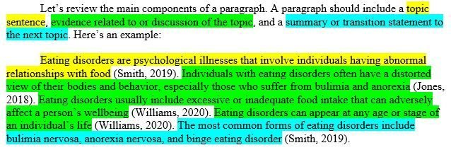

Locality-Sensitive Hashing and Beyond
Beyond Locality Sensitive Hashing; Alexandr Andoni
In the NLP specialization we have covered and used LSH a number of times in at least two courses. In one sense I have an understanding of what is going on when we implement this. In another sense this seems to be quite confusing. So I don’t fully understand some aspects of LSH.
One way to do better is to try and explain it to someone else. This is what I am trying to do here by going back to the source and trying to understand the paper, problems, motivation and finally isolate what it is that is hard to grasp.
This paper is a good introduction to LSH for the angular distance.
In (Andoni et al. 2015) the authors delve into Locality-Sensitive Hashing (LSH) for the angular distance. They show the existence of an LSH family for the angular distance that yields an approximate Near Neighbor Search algorithm with the asymptotically optimal running time exponent. Unlike earlier algorithms with this property (e.g., Spherical LSH), their algorithm is also practical, improving upon the well-studied hyperplane LSH in practice.
For now the two videos which explain in some depth this an the related paper - Optimal Data-Dependent Hashing for Approximate Near Neighbors will have to do.
Time permitting I will try and dive deeper into this paper.
Abstract
We show the existence of a Locality-Sensitive Hashing (LSH) family for the angular distance that yields an approximate Near Neighbor Search algorithm with the asymptotically optimal running time exponent. Unlike earlier algorithms with this property (e.g., Spherical LSH [1 , 2]), our algorithm is also practical, improving upon the well-studied hyperplane LSH [3] in practice.
We also introduce a multiprobe version of this algorithm, and conduct experimental evaluation on real and synthetic data sets.
We complement the above positive results with a fine-grained lower bound for the quality of any LSH family for angular distance. Our lower bound implies that the above LSH family exhibits a trade-off between evaluation time and quality that is close to optimal for a natural class of LSH functions. – (Andoni et al. 2015)
The Paper
References
Citation
@online{bochman2025,
author = {Bochman, Oren},
title = {Practical and {Optimal} {LSH} for {Angular} {Distance}},
date = {2025-02-05},
url = {https://orenbochman.github.io/notes-nlp/reviews/paper/LSH/},
langid = {en}
}